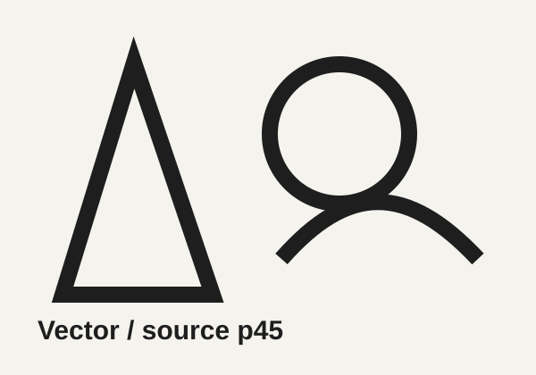
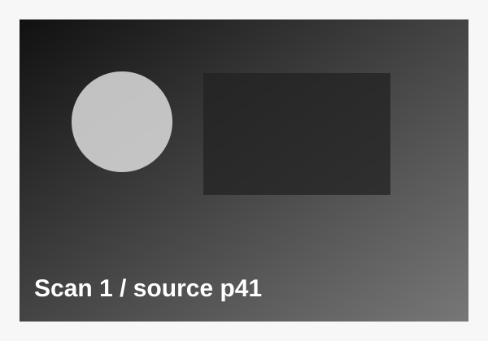

ARTICLE NOTE: Feature story card for the gravity/spaceship scene.
IMG NOTE: Use as scanned hero image. Crop center for desktop.
TAG NOTE: article, img, h3, p.
Gravity Aboard
Sample article copy for the first magazine feature.
Responsive web wireframe using scanned and vector content.
Desktop: 1280px wide, 3-column grid.
Tablet: 768px wide, grid becomes 2 columns.
Mobile: grid becomes 1 column.
ARTICLE NOTE: Feature story card for the gravity/spaceship scene.
IMG NOTE: Use as scanned hero image. Crop center for desktop.
TAG NOTE: article, img, h3, p.
Sample article copy for the first magazine feature.

ARTICLE NOTE: Creature feature card.
IMG NOTE: Keep monster centered in image frame.
TAG NOTE: article, img, h3, p.
Sample article copy for a vintage sci-fi monster spread.

ARTICLE NOTE: Robot image works well as a character highlight.
IMG NOTE: Crop from top/right to keep robot visible.
TAG NOTE: article, img, h3, p.
Sample article copy for the robot feature image.

ARTICLE NOTE: Supporting feature for film/history content.
IMG NOTE: Use object-position to protect right-side text.
TAG NOTE: article, img, h3, p.
Sample article copy for the dystopian science fiction image.

ARTICLE NOTE: Good wide visual for a promotional card.
IMG NOTE: Crop lower third on small screens if needed.
TAG NOTE: article, img, h3, p.
Sample article copy for a flying saucer scene.

ARTICLE NOTE: Use as equipment/technology feature.
IMG NOTE: Works best with full-width image crop.
TAG NOTE: article, img, h3, p.
Sample article copy for the science lab feature.

ARTICLE NOTE: Place vector content in supporting cards.
IMG NOTE: SVG stays sharp at all screen widths.
TAG NOTE: section, article, img.

ARTICLE NOTE: Scanned assets can be used for texture.
IMG NOTE: Check contrast and readability.
TAG NOTE: section, article, img.

ARTICLE NOTE: Use reference page for artboard planning.
IMG NOTE: Keep inside frame with object-fit: contain.
TAG NOTE: section, article, img.